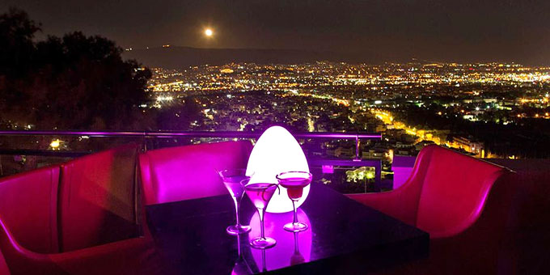
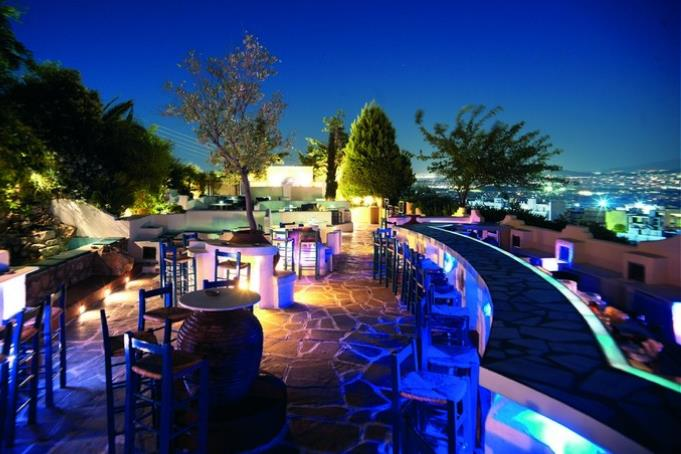
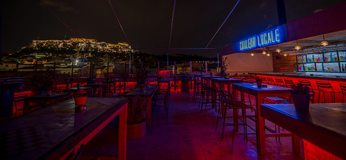
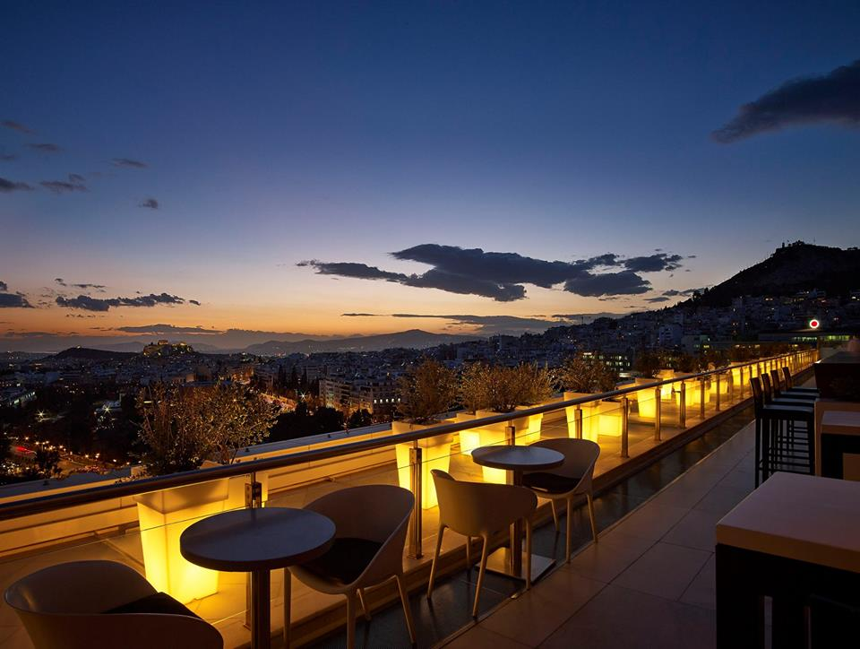

ΠΙΣΩ στην Αρχική σελίδα
Μέρη για Φαγητό
Zambri All day bar-restaurant, Αγίου Δημητρίου 9, Κηφισιά
Σε ένα από τα ωραιότερα αρχοντικά της Κηφισιάς Η νέα glam επιλογή και στέκι πολλών επωνύμων στην Κηφισιά ακούει στο όνομα Zambri. All day χώρος που σε ταξιδεύει σε εξωτικά μέρη χάρη στην ξεχωριστή διακόσμησή του με τα έντονα στοιχεία του πράσινου αλλά και τις ξύλινες λεπτομέρειες, ενώ να σημειωθεί ότι έχει και τη μεγαλύτερη ταράτσα στην περιοχή. Στο παλιό αυτό αρχοντικό μπορείς να περάσεις όμορφα κάθε ώρα της ημέρας, είτε το επιλέξεις πρωί για καφέ και brunch με ελληνική κατεύθυνση είτε για φαγητό ή ποτό και ελαφρύ τσιμπολόγημα με ξεχωριστά πιάτα μέχρι αργά το βράδυ. Στην κουζίνα, ο σεφ Κωνσταντίνος Xρυσοφάκης δημιουργεί εμπνευσμένα πιάτα και πειραματίζεται με ποιοτικά υλικά από διάφορες περιοχές της χώρας. Από ηπειρώτικη κοτόπιτα, χειροποίητο καβουρμά, κοτόπουλο γεμιστό με λαδοτύρι Μυτιλήνης, χορταστικές σαλάτες, όπως αυτή με τη ρόκα, φιλετάκια από μοσχαράκι γάλακτος, καρπάτσιο σπαράγγια, ψητά ντοματίνια και τυρί Σαν Μιχάλη μέχρι γιουβέτσι μπολονέζ που μαγειρεύεται υπομονετικά στον ξυλόφουρνο, τα πιάτα του Zambri είναι ένα κι ένα! Και αφού απολαύσετε το γεύμα σας, ανεβείτε στον 1ο όροφο για ποτό με πιο club διάθεση.

Beluga Art, 2ας Μεραρχίας 8-10, Πειραιάς
Από τα «κόκκινα φανάρια» ο πιο chic προορισμός στην Τρούμπα Μας συστήθηκε πριν από μερικούς μήνες στην πάλαι ποτέ πιο κακόφημη συνοικία του Πειραιά και γρήγορα έγινε από μόνο του ένας λόγος για να κατέβεις προς το λιμάνι. Το Beluga, το δημιούργημα των Σπύρου Μητρόπουλου και Σάββα Παντελίδη, έδωσε μια άλλη πνοή στη συνοικία της Τρούμπας με σεβασμό στο παρελθόν της και διακόσμηση που θα σας εντυπωσιάσει. Εδώ έχεις την αίσθηση ότι βρίσκεσαι σε μουσείο, καθώς απολαμβάνεις το γεύμα σου έχοντας κάτω από τα πόδια σου μέρος των Τειχών του Πειραιά και τριγύρω δεκάδες άλλα έργα τέχνης που κάνουν ξεχωριστή κάθε γωνιά του. Το Beluga είναι ένας artistic πολυχώρος που τα συνδυάζει όλα: ωραίο φαγητό, εμπνευσμένα κοκτέιλ και τακτικά events. Στην εντυπωσιακή σάλα του εστιατορίου με το γυάλινο δάπεδο θα γευτείτε προσεγμένα πιάτα με έμφαση στις ελληνικές πρώτες ύλες αλλά και γεύσεις από τη διεθνή κουζίνα που θα συνδυάσετε άψογα με κάποιο κρασί από την πλούσια λίστα της κάβας του.

Άμπακος,Μεραρχίας 14 & Φίλωνος 66, Πειραιάς
Η αποθέωση του BBQ! Με όνομα που σε προδιαθέτει ότι θα φας μέχρι... τελικής πτώσεως, ένα είναι σίγουρο, ότι στον Άμπακο θα φάτε καλά. Ένα μοντέρνο εστιατόριο με out of the wood decor και urban πινελιές που θα σας κάνει να νιώσετε οικεία με το που θα περάσετε το κατώφλι του ήρθε να προστεθεί στην ανερχόμενη πιάτσα της θρυλικής Τρούμπας. Κλασικό steakhouse, με extra large μερίδες και γεύσεις που αποθεώνουν τη λέξη BBQ. Πιάστε θέση στους μεγάλους δερμάτινους καναπέδες και ξεφυλλίστε το μενού που θα σας βάλει σε δίλημμα για το τι να διαλέξετε. Εδώ θα βρείτε τα καλύτερα φιλέτα και steaks, όπως αρμόζει σε ένα καλό steakhouse, και θα τα συνοδεύσετε με τέλειες σος, φρέσκες τηγανητές πατάτες και πολλά άλλα. Το μυστικό τους για τα άψογα steaks είναι, πέρα από τα εξαιρετικής ποιότητας κρέατα που προμηθεύονται, οι σύγχρονες τεχνικές οργανικού ψησίματος στον high-end ισπανικό παραδοσιακό φούρνο με ξυλοκάρβουνα Mibrasa, που τους προσδίδει μια ξεχωριστή μυρωδιά καπνιστού, ενώ παράλληλα θωρακίζει τα αρώματα και τη γεύση τους.

Μαύρο Πρόβατο, Αρριανού 31, Παγκράτι
Ένα εστιατόριο όμορφο, με μαύρους τοίχους αλλά πολύ ευχάριστη αύρα. Πάνω τους, σαν σε πίνακα, είναι γραμμένες παροιμίες. Εντάξει και τώρα ήρθε η ώρα να σου πω για το φαγητό του. Μικρά πιατάκια με νοστιμιές που θα σου θυμίσουν κλασικό ελληνικό μεζεδοπωλείο, όμως σε μία σούπερ μοντέρνα βερσιόν. Θα δοκιμάσεις γαύρο σε κριθαροκουλούρες με μαριναρισμένη ντομάτα με περίπου 4 ευρουλάκια, αρνάκι γάλακτος στη λαδόκολλα με φρεσκοκομμένες τηγανιτές πατάτες και μυρωδικά με 12 (αλλά τα αξίζει να ξέρεις) και κατίκι Δομοκού. Γενικά είναι οικονομικό αλλά και chic. Και είναι ό,τι πρέπει για ραντεβού, για επαγγελματικό δείπνο, για φάση παρέα, για όλα. Go.

Μπεμπέκα, Διονύσου 16, Χαλάνδρι, τηλ: 2106854880
Value for money Χαλάνδρι στο πιο σπιτικό του. Αυτή τη συνταγή μας σύστησε η Μπεμπέκα σε μια μονοκατοικία στην ήσυχη πλευρά του Χαλανδρίου. Εκεί όπου, στις διαφορετικές, νοσταλγικά διακοσμημένες, φωτεινές αίθουσες απλώνονται τραπεζάκια που γεμίζουν με αυγά μάτια πάνω σε φρέσκες πατατούλες, τραγανές κρεμμυδοροδέλες, φάβα Φενεού, λουκάνικο με λιαστή ντομάτα και φέτα, αρμένικο σουτζούκι, μελιτζάνες στο πήλινο με φέτα, μανιάτικο κριθαρότο, κοκκινιστό κόκορα, καυτερό λαχματζούν και guest star μαγειρευτά ημέρας που κλέβουν την παράσταση. Συνδυάζουμε με ελληνικά αποστάγματα όπως τσίπουρο, ούζο ή ρακόμελο και υπολογίζουμε περί τα 15€ κατ’ άτομο.

Η Παλιά Φάβα , Αχαιών 38, Παλαιό Φάληρο, τηλ: 2109311994
Θα μπορούσε να είναι το δεύτερο όνομα του σπιτικού μαγειρευτού φαγητού. Η Παλιά Φάβα στο ήσυχο δρομάκι του Παλαιού Φαλήρου είναι ένα κλασικό ταβερνάκι-μαγειρείο, από αυτά με την όμορφη σκεπαστή αυλίτσα και τον εσωτερικό χώρο με τα κρασοβάρελα και την παρεΐστικη ατμόσφαιρα. Στα τραπέζια, η μαγείρισσα της Φάβας, η κυρία Ντίνα, σερβίρει κλασικά ψητά κρεατικά και θαλασσινούς μεζέδες, αλλά αυτό για το οποίο φημίζεται είναι τα μαγειρευτά ημέρας. Γεμιστά κολοκυθάκια αυγολέμονο, μελωμένο κότσι, λεμονάτα ψητά κατσαρόλας, αρνάκι λαδορίγανη, μπριάμ, παστίτσιο και σπιτική σπανακόπιτα είναι λίγες από τις γεύσεις που θα σας βάλουν σε πειρασμό.

Κληματαριά , Πλατεία Θεάτρου 2, τηλ: 2103216629
Μια ανάσα από τη Βαρβάκειο, με μια υπέροχη, ζεστή αυλή κρυμμένη πίσω από την πολύχρωμη πόρτα, η Κληματαριά απλώνει τραπεζάκια κάτω από τα κληματόφυλλα, γεμίζει τον χώρο νότες από αγαπημένες λαϊκές και ρεμπέτικες μελωδίες (που συχνά είναι live) αλλά και μυρωδιές από τις μεγάλες γάστρες με τα μαγειρευτά που αχνίζουν στην είσοδο μπροστά από την ανοιχτή κουζίνα. Εδώ θα δοκιμάσετε κρεατικά της ώρας, χωριάτικες πίτες, κεφτεδάκια με ρύζι, γεμιστά, χοιρινό κότσι, κοκκινιστό κόκορα ή κατσικάκι στη γάστρα. Συνδυάστε με χύμα κρασάκι και υπολογίστε περί τα 15€ το άτομο. Το γλυκάκι στο τέλος έρχεται κερασμένο.

Nonna , Κακουργοδικείου 6, Ψυρρή, τηλ: 2130320321
Το νοσταλγικό hip στα καλύτερά του κρύβεται σε μία φωτεινή σάλα μεταξύ Μοναστηρακίου και Ψυρρή, εκεί όπου απλώνονται θρανία, γραφεία, πάγκοι και τραπεζάκια αυλής με φερ φορζέ καρέκλες κάτω από γλάστρες και σιδερένιες σκάλες – σκηνικό που θα μπορούσε να ανήκει στο σπίτι της γιαγιάς μας. Όσο για το φαγητό, εδώ θα βρείτε 6-7 πιάτα ημέρας και λίγες σταθερές επιλογές στο μενού, το οποίο κινείται μεταξύ σπιτικού μαγειρευτού και μοντέρνων ethnic πινελιών. Θα δοκιμάσετε ωραίες ζεστές σούπες ημέρας, θα συνεχίσετε με πολύχρωμες σαλάτες λαχανικών, οσπρίων και ζυμαρικών, θα θυμηθείτε τη μαμά σας με τη σπιτική μακαρονάδα, θα απολαύσετε τις μελωμένες πατατούλες που συνοδεύουν το εξίσου μελωμένο χοιρινό φούρνου και θα ταξιδέψετε γευστικά ως την Ανατολή με το κάρι και τα κινέζικα μπαχαρικά στο κοτόπουλο ή το ρύζι. Θα συνδυάσετε με ελληνικές μπύρες ή σπιτικές λεμονάδες και θα υπολογίσετε περί τα 12€ κατ’ άτομο.

Μέρη για ποτό
Telescope,Λόφος Προφήτη Ηλία, Χαϊδάρι
Μακράν η καλύτερη θέα στην Αθήνα είναι αυτή που απολαμβάνουμε από τις τζαμαρίες αυτού του all day café – bar, με την μίνιμαλ διακόσμηση και τον ατμοσφαιρικό φωτισμό που ταιριάζει ταμάμ με την απόλυτη θέα, από το λιμάνι του Πειραιά έως και το Ολυμπιακό στάδιο. Bonus, οι κλεφτές ματιές στο μεγαλείο του φεγγαριού, μέσα από τα τηλεσκόπια που είναι διασκορπισμένα στις βεράντες και δικαιολογούν και το όνομα του bar. Το απλό ποτό κοστίζει 7€, ενώ τα κοκτέιλ ξεκινούν από 8€.

Scherzo, Άλσος Αγίου Δημητρίου, Πετρούπολη

Couleur Locale, Νορμανού 3, Μοναστηράκι
Από το 2014 όταν και μιλούσαμε για την «κρυφή» ταράτσα της πόλης μέχρι σήμερα, το μπαράκι της Νορμανού καθιερώθηκε ως must για την φοβερή «φάτσα φόρα» θέα του στην Ακρόπολη, τα ωραία κοκτέιλ, τα λαχταριστά σνακ και τις ψαγμένες μουσικές από εναλλασσόμενους Djs που παίζουν στο lobby του καθημερινά. Τα κοκτέιλ ξεκινούν από 7,5€ και περιλαμβάνουν κλασσικές αλλά και signature επιλογές.

Galaxy Bar, Hilton Athens, Βασιλίσσης Σοφίας 46, Ιλίσια
Mε εκπληκτική θέα στην Ακρόπολη, το Λυκαβηττό και τον Σαρωνικό, το κοσμοπολίτικο μπαρ του Hilton ήταν το πρώτο που καθιέρωσε τη φιλοσοφία του «κοκτέιλ με σούπερ θέα». Σήμερα εξακολουθεί να αποτελεί σημείο αναφοράς για glam εξόδους, ενώ ενισχύει τακτικά τον κατάλογό του με νέα κοκτέιλ και αρκετές γευστικές προτάσεις. Η μουσική κινείται σε κλασσικά lounge μονοπάτια, τα ποτά ξεκινούν από 11€ και τα κοκτέιλ 15€.

Pink Freud, Αρχελάου 7, Παγκράτι
Όταν το πάθος για καλή μουσική πηγάζει από την ψυχή, γεννιούνται χώροι όπως αυτή η μικρή γωνιά στο Παγκράτι. Το όνομά του εμπνευσμένο από μία από τις μεγαλύτερες ροκ μπάντες όλων των εποχών και τον «πατέρα» της ψυχανάλυσης: Pink Freud. Ένας μικρός, μοντέρνος χώρος με industrial χαρακτηριστικά, που θα σας κάνει να νιώσετε σαν στο σπίτι σας. Ιδανικό από το πρωί για καφέ μέχρι αργά το βράδυ με καλές μουσικές, συχνά events με γνωστούς guest DJs και επιλεγμένα live (stay tuned μέσα από τη σελίδα του facebook). Στην μπάρα του θα βρείτε εμπνευσμένα κοκτέιλ, ελληνικές μπίρες από μικρές ζυθοποιίες, ελληνικά κρασιά αλλά και ρακή για τους πιο «παραδοσιακούς». Αν είστε βιβλιοφάγοι, εδώ θα βρείτε μερικούς πολύ ενδιαφέροντες τίτλους για να περάσετε δημιουργικά την ώρα σας. Extra tip: Κάθε Πέμπτη θα σας σερβίρουν καφέ με μόλις €2 και ποτό με €5.

Μπαραλλού, Μαρ. Γερουλάνου 115 & Ελ. Βενιζέλου, Αργυρούπολη
Διαφορετικός χώρος με ψαγμένο ύφος και πολύ ιδιαίτερα διακοσμητικά στοιχεία που συνδυάζονται αρμονικά μεταξύ τους, όπως π.χ. το vintage τραπεζάκι με τις παλιές εφημερίδες και τις σχολικές καρέκλες. Διαθέτει μεγάλη ποικιλία από 40 διαφορετικά είδη μπίρας, κρασί, αλλά και χύμα οινόμελο και ρακόμελο. Τα ποτά του συνοδεύονται ιδανικά με ποικιλίες από ορεκτικά και tapas για όλη την παρέα. Αργυρούπολη

Β- Kouti, Ν. Τρύπια 33 & Βρυούλων, Νέα Φιλαδέλφεια
Στην ανερχόμενη πιάτσα της Νέας Φιλαδέλφειας κατέχει τη δική του, ιδιαίτερη θέση χάρη στην ξεχωριστή, αρτιστίκ πινελιά που προσδίδει στην περιοχή. Το B-Κouti ικανοποιεί τις καλλιτεχνικές του ανησυχίες γεμίζοντας το εβδομαδιαίο του πρόγραμμα με θεατρικές παραστάσεις, live μουσικές, stand up comedy κ.ά. Στα συν, οι μουσικές επιλογές που κινούνται μεταξύ σουίνγκ, τζαζ και φάνκι ρυθμών.

Couleur Locale, Νορμανού 3, Αθήνα
Φέτος το καλοκαίρι «ακούστηκε» πολύ λόγω του συνδυασμού που διέθετε: άψογη ταράτσα με θέα τον ιερό βράχο της Ακρόπολης, καταπληκτικά κοκτέιλ και ωραίες μουσικές. Για τον χειμώνα η ομάδα του Locale ανακαίνισε πλήρως τον χώρο στο ισόγειο, επεκτάθηκε και έχει γίνει ένα με τη στοά της Νορμανού στο Μοναστηράκι. Στην ανακαινισμένη στοά του Couleur Locale ο χειμώνας έρχεται με πολλές μουσικές εκπλήξεις, καθώς θα φιλοξενεί κάθε μέρα διαφορετικούς DJs και ραδιοφωνικούς παραγωγούς, σε συνδυασμό με νέες αφίξεις πιάτων αλλά και κοκτέιλ. Μερικά από τα ονόματα που θα ακούσετε είναι τα εξής: Teo Mavropoulos, DJ Snatch, Videotapes, Clubkid, DJ Squeezy, Matina Sous Peau, DJ Beautifool.

Editor's Pick:
ΜΠΑΡ ΜΠΕΕ ΚΙΟΥ, Φρεαττύδος 13, Πειραιάς
To Μπαρ Μπεε Κιου στον Πειραιά είναι ένα από τα πιο γνωστά burgerάδικα της περιοχής και όχι μόνο. Το Μπαρ Μπεε Κιου μπήκε πρόσφατα στην λίστα με τα 35 καλύτερα εστιατόρια με burgers του κόσμου. Ο κατάλογος είναι γεμάτος με λαχταριστά burgers ή μπιφτεκόψωμα όπως τα ονομάζουν. Μεγάλα σε μέγεθος burgers σε διάφορες παραλλαγές και με ονομασίες λογοπαίγνια. Ξεχωρίζουν επίσης οι τηγανητές πατάτες που είναι κομμένες στο χέρι σε μεγάλη ποικιλία, από σκέτες με τυρί τσένταρ μέχρι γαρνιρισμένες με κιμά ή αυγά μάτια. αυτό που κάνει ξεχωριστά τα burgers του Μπαρ Μπεε Κιου είναι τα χειροποιήτα ψωμάκια, τα ολόφρεσκα κρέατα που ψήνονται εκείνη την στιγμή που τα ζητάς και τέλος οι φρέσκιες πατάτες που κόβονται καθημερινά στο χέρι.